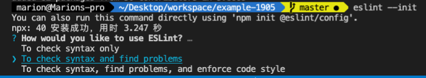
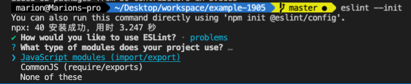
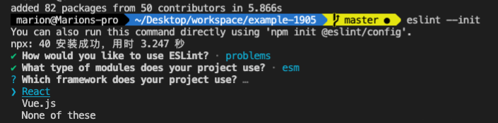
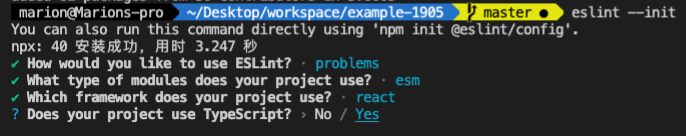
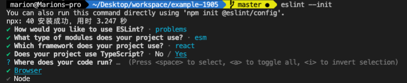
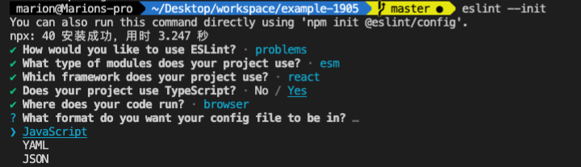
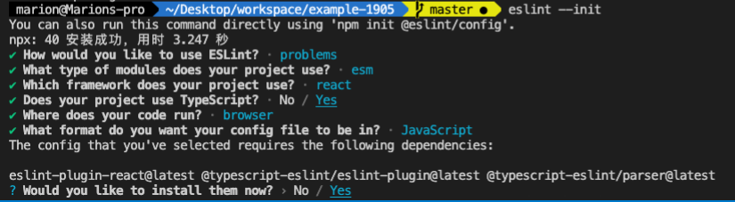

平安蜀黍的前端教程 > 备选知识点 > ESLint
什么是 ESLint
代码检查是一种静态的分析，常用于寻找有问题的模式或者代码，并且不依赖于具体的编码风格。对大多数编程语言来说都会有代码检查，一般来说编译程序会内置检查工具。而 JavaScript 作为一个动态的弱类型的解析型脚本语言，因为不需要通过编译就可以在浏览器中运行，这就导致它可以在编写完成后不经任何检测就发布到执行环境，然后只能通过在执行环境中不断调试来解决各种问题和错误。
ESLint 是一个用来识别 ECMAScript/JavaScript 并且按照内置规则给出报告的代码检测工具，我们可以用它来解决这种尴尬的问题，它可以在我们编写 JavaScript 代码时提示我们一些语法和规范上的问题，而不是等到执行的过程中才发现。
ESLint 的特点
- 内置规则和自定义规则共用一套规则 API。
- 内置的格式化方法和自定义的格式化方法共用一套格式化 API。
- 额外的规则和格式化方法能够在运行时指定。
- 规则和对应的格式化方法并不强制捆绑使用。
- 每条规则都是各自独立的，可以根据项目情况选择开启或关闭。
- 用户可以将结果设置成警告或者错误。
- ESLint 并不推荐任何编码风格，规则是自由的。
- 所有内置规则都是泛化的。
ESLint 的配置规则
你可以在项目中使用.eslintrc.文件或 package.json 文件中的 eslintConfig 选项来配置 ESLint。你的.eslintrc.文件后缀可以是.json 或.js 又或者是.yml，ESLint 会根据其后缀名来判断文件中的规则权重以确认你需要使用哪一类规则：
配置文件的优先级：
.eslintrc.js > .eslintrc.yaml > .eslintrc.yml > .eslintrc.json > .eslintrc > package.json
在项目中初始化 eslint 配置文件
进入我们之前创建的项目目录，然后安装 eslint
npm i -D eslint
安装完成后执行
eslint --init
终端会显示选择操作：

这里是询问我们怎样使用 eslint，上下键切换，选择 to check syntax and find problems，校验语法且匹配问题，回车：

这里是询问我们的项目使用的是哪种模块化规范，选择 Javascript modules(import/export)，回车

这里是询问我们项目中具体使用了哪种框架，选择 React，回车

这里是询问我们的项目是否使用 typescript，左右键切换，选择 yes

这里是询问我们的项目主要运行在什么环境，选择 Browser，回车

这里是询问我们需要生成哪种类型的配置文件，选择 JavaScript，回车

这里是告诉我们刚才那些选择的配置项需要哪些依赖，是否立刻安装，选择 yes

这里是询问我们使用哪种方式安装，npm 或 yarn 都可以，回车后开始安装。安装完成后，会在我们的项目根目录下生成一个.eslintrc.js 文件：
// 根目录.eslintrc.js
module.exports = {
// 运行环境
env: {
// 浏览器
browser: true,
// 代码规范使用es2021
es2021: true,
},
// extends 可以将它理解为我们学习的类中的继承方法，意思就是将eslint提供的一些比较常用的公共配置导入到当前这个项目中使用
extends: [
// 导入eslint推荐配置，注意前缀名称是eslint，表示直接启用规则
'eslint:recommended',
// 导入eslint推荐的react配置，前缀名称是plugin时表示选择性启用
'plugin:react/recommended',
// 导入eslint推荐的typescript配置
'plugin:@typescript-eslint/recommended',
],
// 解析器
parser: '@typescript-eslint/parser',
// 解析器配置项
parserOptions: {
// 语法特性
ecmaFeatures: {
// 使用了jsx
jsx: true,
},
// ecma规范版本
ecmaVersion: 'latest',
// 来源类型
sourceType: 'module',
},
// 依赖的插件
plugins: ['react', '@typescript-eslint'],
rules: {
// 在这里面写我们自己定义的规则
// 示例：如果定义了变量但并未在后面的代码中使用
no-unused-vars: 'error'
},
}
注意：错误的级别
"off" 或 0 — 告诉 ESLint 忽略给定的规则
"warn" 或 1 — 告诉 ESLint 将违反给定的行为视为警告
"error" 或 2 — 告诉 ESLint 在违反给定规则时出错
配置 vscode 以使用 eslint
我们在项目里安装了 eslint 包并且配置了.eslintrc 文件，就要让我们的 vscode 能按照我们的.eslintrc 文件来实时监测我们的代码，所以，需要在 vscode 的 setting.json 里添加如下配置：
"eslint.validate": [
"javascript",
"javascriptreact",
{
"language": "typescript",
},
{
"language": "typescriptreact",
},
],
在 package.json 增加检验命令
{
"scripts": {
"lint": "eslint --ext .js --ext .jsx src"
}
}
eslint 规则解析
本篇配置基本上参考 ESLint 官网提供的规则列表进行配置：
"no-alert": 0,//禁止使用alert confirm prompt
"no-array-constructor": 2,//禁止使用数组构造器
"no-bitwise": 0,//禁止使用按位运算符
"no-caller": 1,//禁止使用arguments.caller或arguments.callee
"no-catch-shadow": 2,//禁止catch子句参数与外部作用域变量同名
"no-class-assign": 2,//禁止给类赋值
"no-cond-assign": 2,//禁止在条件表达式中使用赋值语句
"no-console": 2,//禁止使用console
"no-const-assign": 2,//禁止修改const声明的变量
"no-constant-condition": 2,//禁止在条件中使用常量表达式 if(true) if(1)
"no-continue": 0,//禁止使用continue
"no-control-regex": 2,//禁止在正则表达式中使用控制字符
"no-debugger": 2,//禁止使用debugger
"no-delete-var": 2,//不能对var声明的变量使用delete操作符
"no-div-regex": 1,//不能使用看起来像除法的正则表达式/=foo/
"no-dupe-keys": 2,//在创建对象字面量时不允许键重复 {a:1,a:1}
"no-dupe-args": 2,//函数参数不能重复
"no-duplicate-case": 2,//switch中的case标签不能重复
"no-else-return": 2,//如果if语句里面有return,后面不能跟else语句
"no-empty": 2,//块语句中的内容不能为空
"no-empty-character-class": 2,//正则表达式中的[]内容不能为空
"no-empty-label": 2,//禁止使用空label
"no-eq-null": 2,//禁止对null使用==或!=运算符
"no-eval": 1,//禁止使用eval
"no-ex-assign": 2,//禁止给catch语句中的异常参数赋值
"no-extend-native": 2,//禁止扩展native对象
"no-extra-bind": 2,//禁止不必要的函数绑定
"no-extra-boolean-cast": 2,//禁止不必要的bool转换
"no-extra-parens": 2,//禁止非必要的括号
"no-extra-semi": 2,//禁止多余的冒号
"no-fallthrough": 1,//禁止switch穿透
"no-floating-decimal": 2,//禁止省略浮点数中的0 .5 3.
"no-func-assign": 2,//禁止重复的函数声明
"no-implicit-coercion": 1,//禁止隐式转换
"no-implied-eval": 2,//禁止使用隐式eval
"no-inline-comments": 0,//禁止行内备注
"no-inner-declarations": [2, "functions"],//禁止在块语句中使用声明（变量或函数）
"no-invalid-regexp": 2,//禁止无效的正则表达式
"no-invalid-this": 2,//禁止无效的this，只能用在构造器，类，对象字面量
"no-irregular-whitespace": 2,//不能有不规则的空格
"no-iterator": 2,//禁止使用__iterator__ 属性
"no-label-var": 2,//label名不能与var声明的变量名相同
"no-labels": 2,//禁止标签声明
"no-lone-blocks": 2,//禁止不必要的嵌套块
"no-lonely-if": 2,//禁止else语句内只有if语句
"no-loop-func": 1,//禁止在循环中使用函数（如果没有引用外部变量不形成闭包就可以）
"no-mixed-requires": [0, false],//声明时不能混用声明类型
"no-mixed-spaces-and-tabs": [2, false],//禁止混用tab和空格
"linebreak-style": [0, "windows"],//换行风格
"no-multi-spaces": 0,//不能用多余的空格
"no-multi-str": 2,//字符串不能用\换行
"no-multiple-empty-lines": [1, {"max": 3}],//空行最多不能超过2行
"no-native-reassign": 2,//不能重写native对象
"no-negated-in-lhs": 2,//in 操作符的左边不能有!
"no-nested-ternary": 0,//禁止使用嵌套的三目运算
"no-new": 1,//禁止在使用new构造一个实例后不赋值
"no-new-func": 1,//禁止使用new Function
"no-new-object": 2,//禁止使用new Object()
"no-new-require": 2,//禁止使用new require
"no-new-wrappers": 2,//禁止使用new创建包装实例，new String new Boolean new Number
"no-obj-calls": 2,//不能调用内置的全局对象，比如Math() JSON()
"no-octal": 2,//禁止使用八进制数字
"no-octal-escape": 2,//禁止使用八进制转义序列
"no-param-reassign": 2,//禁止给参数重新赋值
"no-path-concat": 0,//node中不能使用__dirname或__filename做路径拼接
"no-plusplus": 0,//禁止使用++，--
"no-process-env": 0,//禁止使用process.env
"no-process-exit": 0,//禁止使用process.exit()
"no-proto": 2,//禁止使用__proto__属性
"no-redeclare": 2,//禁止重复声明变量
"no-regex-spaces": 2,//禁止在正则表达式字面量中使用多个空格 /foo bar/
"no-restricted-modules": 0,//如果禁用了指定模块，使用就会报错
"no-return-assign": 1,//return 语句中不能有赋值表达式
"no-script-url": 0,//禁止使用javascript:void(0)
"no-self-compare": 2,//不能比较自身
"no-sequences": 0,//禁止使用逗号运算符
"no-shadow": 2,//外部作用域中的变量不能与它所包含的作用域中的变量或参数同名
"no-shadow-restricted-names": 2,//严格模式中规定的限制标识符不能作为声明时的变量名使用
"no-spaced-func": 2,//函数调用时 函数名与()之间不能有空格
"no-sparse-arrays": 2,//禁止稀疏数组， [1,,2]
"no-sync": 0,//nodejs 禁止同步方法
"no-ternary": 0,//禁止使用三目运算符
"no-trailing-spaces": 1,//一行结束后面不要有空格
"no-this-before-super": 0,//在调用super()之前不能使用this或super
"no-throw-literal": 2,//禁止抛出字面量错误 throw "error";
"no-undef": 2,//不能有未定义的变量
"no-undef-init": 2,//变量初始化时不能直接给它赋值为undefined
"no-undefined": 2,//不能使用undefined
"no-unexpected-multiline": 2,//避免多行表达式
"no-underscore-dangle": 1,//标识符不能以_开头或结尾
"no-unneeded-ternary": 2,//禁止不必要的嵌套 var isYes = answer === 1 ? true : false;
"no-unreachable": 2,//不能有无法执行的代码
"no-unused-expressions": 2,//禁止无用的表达式
"no-unused-vars": [2, {"vars": "all", "args": "after-used"}],//不能有声明后未被使用的变量或参数
"no-use-before-define": 2,//未定义前不能使用
"no-useless-call": 2,//禁止不必要的call和apply
"no-void": 2,//禁用void操作符
"no-var": 0,//禁用var，用let和const代替
"no-warning-comments": [1, { "terms": ["todo", "fixme", "xxx"], "location": "start" }],//不能有警告备注
"no-with": 2,//禁用with
"array-bracket-spacing": [2, "never"],//是否允许非空数组里面有多余的空格
"arrow-parens": 0,//箭头函数用小括号括起来
"arrow-spacing": 0,//=>的前/后括号
"accessor-pairs": 0,//在对象中使用getter/setter
"block-scoped-var": 0,//块语句中使用var
"brace-style": [1, "1tbs"],//大括号风格
"callback-return": 1,//避免多次调用回调什么的
"camelcase": 2,//强制驼峰法命名
"comma-dangle": [2, "never"],//对象字面量项尾不能有逗号
"comma-spacing": 0,//逗号前后的空格
"comma-style": [2, "last"],//逗号风格，换行时在行首还是行尾
"complexity": [0, 11],//循环复杂度
"computed-property-spacing": [0, "never"],//是否允许计算后的键名什么的
"consistent-return": 0,//return 后面是否允许省略
"consistent-this": [2, "that"],//this别名
"constructor-super": 0,//非派生类不能调用super，派生类必须调用super
"curly": [2, "all"],//必须使用 if(){} 中的{}
"default-case": 2,//switch语句最后必须有default
"dot-location": 0,//对象访问符的位置，换行的时候在行首还是行尾
"dot-notation": [0, { "allowKeywords": true }],//避免不必要的方括号
"eol-last": 0,//文件以单一的换行符结束
"eqeqeq": 0,//必须使用全等
"func-names": 0,//函数表达式必须有名字
"func-style": [0, "declaration"],//函数风格，规定只能使用函数声明/函数表达式
"generator-star-spacing": 0,//生成器函数*的前后空格
"guard-for-in": 0,//for in循环要用if语句过滤
"handle-callback-err": 0,//nodejs 处理错误
"id-length": 0,//变量名长度
"indent": [2, 2],//缩进风格
"init-declarations": 0,//声明时必须赋初值
"key-spacing": [0, { "beforeColon": false, "afterColon": true }],//对象字面量中冒号的前后空格
"lines-around-comment": 0,//行前/行后备注
"max-depth": [0, 4],//嵌套块深度
"max-len": [0, 80, 4],//字符串最大长度
"max-nested-callbacks": [0, 2],//回调嵌套深度
"max-params": [0, 3],//函数最多只能有3个参数
"max-statements": [0, 10],//函数内最多有几个声明
"new-cap": 2,//函数名首行大写必须使用new方式调用，首行小写必须用不带new方式调用
"new-parens": 2,//new时必须加小括号
"newline-after-var": 2,//变量声明后是否需要空一行
"object-curly-spacing": [0, "never"],//大括号内是否允许不必要的空格
"object-shorthand": 0,//强制对象字面量缩写语法
"one-var": 1,//连续声明
"operator-assignment": [0, "always"],//赋值运算符 += -=什么的
"operator-linebreak": [2, "after"],//换行时运算符在行尾还是行首
"padded-blocks": 0,//块语句内行首行尾是否要空行
"prefer-const": 0,//首选const
"prefer-spread": 0,//首选展开运算
"prefer-reflect": 0,//首选Reflect的方法
"quotes": [1, "single"],//引号类型 `` "" ''
"quote-props":[2, "always"],//对象字面量中的属性名是否强制双引号
"radix": 2,//parseInt必须指定第二个参数
"id-match": 0,//命名检测
"require-yield": 0,//生成器函数必须有yield
"semi": [2, "always"],//语句强制分号结尾
"semi-spacing": [0, {"before": false, "after": true}],//分号前后空格
"sort-vars": 0,//变量声明时排序
"space-after-keywords": [0, "always"],//关键字后面是否要空一格
"space-before-blocks": [0, "always"],//不以新行开始的块{前面要不要有空格
"space-before-function-paren": [0, "always"],//函数定义时括号前面要不要有空格
"space-in-parens": [0, "never"],//小括号里面要不要有空格
"space-infix-ops": 0,//中缀操作符周围要不要有空格
"space-return-throw-case": 2,//return throw case后面要不要加空格
"space-unary-ops": [0, { "words": true, "nonwords": false }],//一元运算符的前/后要不要加空格
"spaced-comment": 0,//注释风格要不要有空格什么的
"strict": 2,//使用严格模式
"use-isnan": 2,//禁止比较时使用NaN，只能用isNaN()
"valid-jsdoc": 0,//jsdoc规则
"valid-typeof": 2,//必须使用合法的typeof的值
"vars-on-top": 2,//var必须放在作用域顶部
"wrap-iife": [2, "inside"],//立即执行函数表达式的小括号风格
"wrap-regex": 0,//正则表达式字面量用小括号包起来
"yoda": [2, "never"]//禁止尤达条件